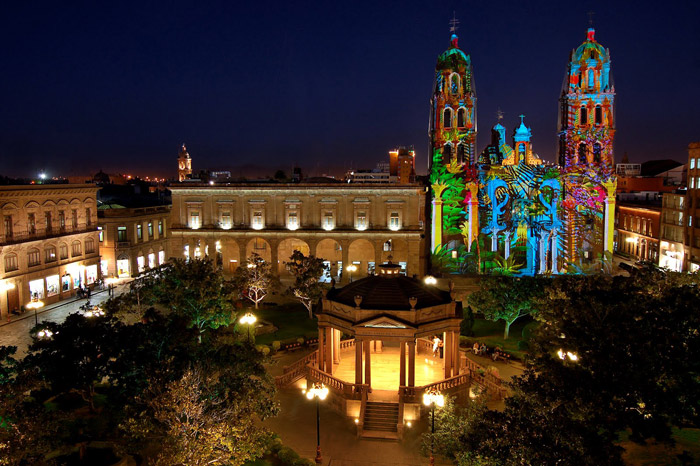

My name is Itzel, I'm 27 years old and I'm proudly mexican. From San Luis Potosí to be more specific.
But... Where's San Luis Potosí, you might think... Well San Luis Potosí is located in the center of México. It's a very colorful city full of biodiversity and the most tasty and delicious food. 🤤
I'm currently living in Barcelona, Spain. I moved here because I wanted to study a Master in Event Organization and after a few years of working and studying in the hospitality environment, I decided to start a new journey in the programming world.
Also I'm a very creative person and I love to take photos in every moment, also when I get a little bit more creative I like to illustrate and sometimes I paint. In this web you'll be available to see a little bit of my photos and illustrations